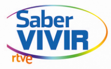

CONSULTA DE
PSICOLOGÍA ONLINE
¿Estás sufriendo un problema que te sobrepasa?
SOLICITA CONSULTA
50% descuento en 1° sesión
TERAPIAS
Nuestros tratamientos psicólogicos
PSICÓLOGOS
Conoce quien te atenderá
CONTÁCTANOS
Tienes dudas o necesitas orientación
LA PSICOLOGÍA ONLINE
Las nuevas tecnologías son una realidad que forman parte de nuestra vida. No cabe duda que internet ha marcado una nueva época en nuestra manera de vivir y de relacionarnos, haciendo posible el nacimiento de la psicología online.
La terapia online se basa en las estrategias y técnicas que usamos en la terapia tradicional por lo que su eficacia y efectividad es la misma, usando nuevos medios de comunicarse: chat, teléfono y videoconferencia.
FASES DE LA TERAPIA ONLINE
INFO
A QUIÉN VA DIRIGIDA
La psicología online VA DIRIGIDA A TODAS LAS PERSONAS.
Además ofrece especiales ventajas a quienes:
Te orientamos de forma gratuita y sin compromiso acerca de la terapia más apropiada y sobre cualquier duda que tengas
PREGÚNTANOSSERVICIOS DE PSICOLOGÍA ONLINE
CONSULTA POR CHAT
Mediante programas de chat (skype, Hangouts, Messenger, etc) se mantendrá una consulta de 1 hora.
CONSULTA TELEFÓNICA
Sesiones habladas de 1 hora al número de teléfono fijo que nos proporciones o mediante el programa Skype.
CONSULTA VIDEOCONFERENCIA
Sesiones de 1 hora de duración mediante videoconferencia online usando el programa Skype.
ÁREA PERSONAL DE USUARIO
Gestiona toda la terapia desde tu área personal

ÁREA PERSONAL

VENTAJAS DE LA PSICOLOGÍA ONLINE
La Asociación Americana de Psiquiatría afirma que "la terapia online produce resultados clínicos equivalentes a los conseguidos en la terapia tradicional en consulta".
TESTIMONIOS
Buenos días Sara, te esribo para agradecerte todo lo que has hecho por mí, reconozco que no tenía mucha confianza, ya te lo conté en su día, porque la anterior terapia que hice no me sirvió de nada, sin embargo creo que el que me hayas explicado que son los ataques de ansiedad, porque suceden, que yo haya podido comprenderlo ha sido clave para que los haya superado, tanto los ataques como el miedo a que me sucedan... con como lo pase, tu lo sabes, te estaré eternamente agradecido.
MessiPSICONLINE EN LOS MEDIOS DE COMUNICACIÓN
PSICONLINE, EXPERTOS EN PSICOLOGÍA ONLINE